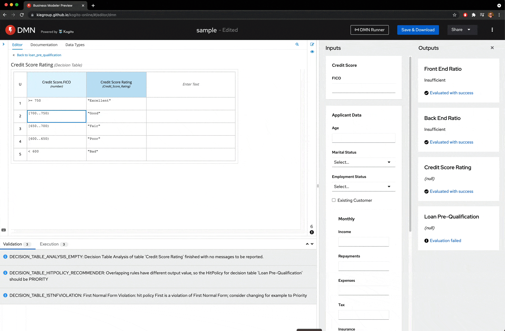

Comparing Choices in DMN Modeling
Recently in a blog post, Keith Swenson, VP of R&D Fujitsu America and former leader of the DMN “Technical Compatibility Kit,” did a comparative analysis between free DMN modeling alternatives.
The author compared TrisoTech DMN Modeler, Camunda, Red Hat Drools Workbench, and our beloved KIE Sandbox. As the results are interesting, I’ve decided to share them in a blog post.
Little Background: Kie Sandbox and DMN ‘runner’
Started with a prototype in late 2020, aiming to explore ways to augment the developer authoring experience for BPMN and DMN assets; KIE Sandbox gradually got traction and became an integrated part of our Tooling experience.
Check out this blog post for a walkthrough of the top features of KIE Sandbox.

Focusing on a seamless authoring experience and an instantaneous feedback loop for DMN models, the DMN runner was launched mid-2021, and quickly became one of my favorite innovations on Tooling.

Using a fast and automatic form generation and evaluation based on DMN models, DMN runner allows users to quickly try and experiment with their DMN runner in authoring, emulating an experience similar to authoring a spreadsheet like Excel or Google Docs.

Comparing Choices in Modeling DMN
In a recent blog post, Keith Swenson provided the following feedback from our tools:
What is particularly impressive is the DMN test capability. To get it to run, you need to download and start the KIE Sandbox Extended Services, which ran without a hitch. The web UI automatically noticed that the engine was installed. Then, it would automatically generate forms for inputting the data. Most impressive was that it can handle structured data records and arrays, even arrays of structured records. The output appears in the next column over. The complex table and list commands all ran. It is hard for me to really express how great it was after days of trying to get various combinations to work, to find an environment where everything ran without a problem.
So, if you want practical experience with DMN models and running the models, go right to KIE Sandbox. It works.
– Keith Swenson
The author also summarizes that among other competitors, KIE Sandbox is the “best all around tool for a DMN practitioner, and built on RedHat so certainly compatible with that.”
Keith Swenson, our tooling team, would like to thank you for the feedback, and we are looking forward to ways to improve even more our Tooling!

{kind=link}